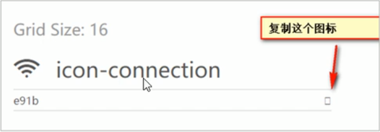
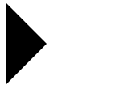

css精灵图&字体图标原文出处:本文由博客园博主小咸鱼|大梦想提供。
原文连接:https://www.cnblogs.com/SSPOFA/p/11870003.html
精灵图
- 为什么需要精灵图
- 为了有效的减少服务器接收和发送请求的次数，提高页面的加载速度。出现了CSS精灵技术
- 精灵图（sprites）的使用
- 精灵技术主要针对背景图片。就是把多个小背景图片整合到一张大图片中。
- 这个大图片也称为sprites精灵图或者雪碧图
- 移动背景图片位置，使用background-position
- 移动的距离就是这个目标图片的x和y坐标。注意网页中的坐标有所不同
- 使用精灵图的时候需要精确侧脸，每个小背景图片的大小和位置
字体图标
- 主要用于显示网页中通用、常用的一些小图标
- 精灵图缺点
- 图片文件比较大
- 图片本身放大和缩小会失真
- 一旦图片制作完想要更换非常复杂
- 字体图标可以为前端工程师提供一种方便高效的图标使用方式，展示的时图标，本质属于字体
- 优点
- 轻量级：一个图标字体要比一系列的图像要小，一旦字体加载了，图标就会马上渲染出来，减少服务器请求
- 灵活性：本质其实是文字，可以很随意的改变颜色，产生阴影、透明效果，旋转等
- 兼容性：几乎支持所有的浏览器
- 【注意】
- 字体图标不能代替精灵技术，只是对工作中图标部分技术的提升和优化
- 字体图标的下载
- icomoon字体库 http：//icomoon.io
- 阿里iconfont字体库 http：//www.iconfontcn/
- 字体图标的引入
- 把下载包里面的font文件夹放入页面根目录
- 在CSS样式中全局生命字体：简单理解把这些字体文件通过css引入到我们页面中
- html标签内添加小图标
- 
- 字体图标的追加
- 把压缩包里面的selection.json从新上传，然后选中自己想要新的图标，重新下载压缩包，并替换原来的文件
CSS三角画法
div{
width:0;
height:0;
line-height: 0;
font-size: 0;
border: 50px solid transparent;
border-left-color: black;
}
